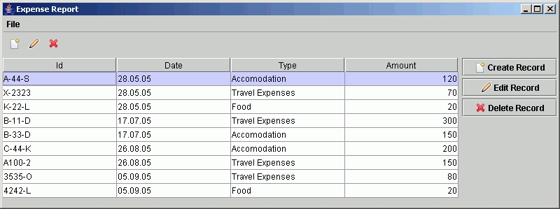

Expense Records
Running the example
The example is started using the ExpenseMain class in package org.gui4j.examples.expenses.
You need gui4j, dom4j, commons-logging and the examples library in you classpath.
From the base
directory (gui4j-x.x) of the latest distribution you can start the example using the following commandline
(here, for gui4 release 1.2.1 under Windows):
java -cp
gui4j-1.2.1.jar;lib\dom4j-1.6.1.jar;lib\commons-logging-1.0.2.jar;docs\gui4jdocs\examples.jar
org.gui4j.examples.expenses.ExpenseMain
The following window appears:

When editing an expense record, the following dialog is shown:

XML definitions
The XML definitions can be found in the zip file examples-src.zip in folder
org.gui4j.examples.expenses.
Notes
Some interesting points about the example in package org.gui4j.examples.expenses:
- CheckXML.java shows how to use org.gui4j.Gui4jValidator to check the correctness of
gui4j XML definitions, including type safety of method calls.
- expenseList.xml shows how to use context menus in a table (popupMenu component and
popup attribute of table component)
- expenseList.xml shows how to use a toolbar component.
- expenseList.xml shows how to use a combination of borderLayouts and
gridLayouts to build typical layouts.
- expenseList.xml and ExpenseListController show how to use Gui4jEvents to
notify the GUI that it should update itself. Here it is used, for example, to refresh the contents of
the table when an expense record was added or removed.
- expenseEdit.xml and ExpenseEditController show how to create a modal edit dialog. The
combination of the labelForm component and the StyleBegin/StyleEnd elements
referencing a centrally defined style demonstrates the ability to build consistent and maintinable
GUIs. For example, if you want all edit forms in your application to have its labels left aligned
instead of right aligned you can simply change the hAlignment attribute of the "editForm"
style's Style_label element.
- The dialog also incorporates a very basic validation concept: try to edit an expense record and clear
out its "Record Id" and click "Ok". An error symbol will occur with an explanation of the
validation error next to it.